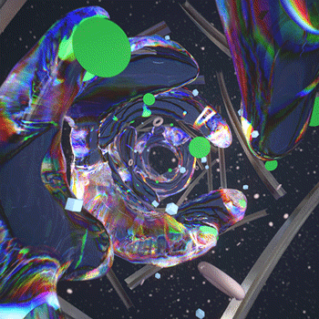

A little space of art
The art of paintings and the figures represented on a canvas are essential to understanding human history. As
we know art has always been present as part of the expression of events, feelings, and all kinds of
materialization of mostly past events.
In a general concept, art transcends the barriers of reality and aims to reveal a side of the story that only
the viewer can understand in a unique way and different from other viewers because painting and the
development of this art has and will always have different meanings for everyone's eyes.
Below, you will find works of all colors and a brief description of their content, although remember
that in art, only the individual who observes has the last word in deciding what he sees and does not see on a
canvas. Next, you will our favorite paintings and opinions that were found as the most accurate for describing all these artworks


1. The Creation of Adam - Michelangelo
“The Creation of Adam” is the central element in the great fresco by Michelangelo (or Michelangelo) in the Sistine Chapel. It is one of the most replicated biblical paintings in history, so surely, like some of the other famous works of art on this list (or almost all of them) you have seen it on all kinds of surfaces such as tablecloths, puzzles, t-shirts, etc. In this painting, God is depicted as giving life to Adam, and the creation of man is central to the biblical creative narrative. God floats here in a draping cloud and other human figures. He is depicted as an elderly man, wrapped in a simple, muscular yet realistic robe. His outstretched hand connects God with humanity.

2. Guernica - Pablo Picasso
Guernica is probably Picasso's best known painting. Although this great painter has many famous works of art among his repertoire, the background of this one is something very particular. It is a painting that tells us about the deep pain caused by the bombing that occurred in 1937 in the Basque city of Guernica during the Spanish Civil War, orchestrated by German and Italian warships that were allied to the fascist leader Francisco Franco. The left-wing government that opposed him commissioned this anti-war “cris de coeur” from Picasso for the Spanish Pavilion at the 1937 World's Fair in Paris.

3. Mona Lisa - Fernando Botero
Guernica is probably Picasso's best known painting. Although this great painter has many famous works of art among his repertoire, the background of this one is something very particular. It is a painting that tells us about the deep pain caused by the bombing that occurred in 1937 in the Basque city of Guernica during the Spanish Civil War, orchestrated by German and Italian warships that were allied to the fascist leader Francisco Franco. The left-wing government that opposed him commissioned this anti-war “cris de coeur” from Picasso for the Spanish Pavilion at the 1937 World's Fair in Paris.

4. Las Meninas - Diego Velázquez
This masterpiece by the painter Diego Velázquez consists of different themes addressed in one single: it is a portrait of the Royal Family of Spain and their entourage in Velázquez's studio; a self-portrait; It could be said that it is almost a display of “bravura” brushwork (a term coined in Italy that means “great skill”) to exalt art for art's sake and an interior scene that shows us a little of Velázquez's working life. . “Las Meninas” is also a treatise on the nature of seeing, as well as a riddle to confuse the viewer as to what exactly he is seeing. It is the visual equivalent of "breaking the fourth wall", which in this case would be rather the far wall where the mirror reflects the faces of the King and Queen of Spain.

5.White Center
The Sotheby's auction house sells this Rothko in New York for 72.84 million dollars, reaching the record at the time as the most expensive painting ever sold. "White Center" had belonged to Rockefeller (he had bought it for $8,500), but a new and anonymous buyer got hold of this very expensive work for private consumption. Mark Rothko is considered, along with Pollock, one of the great artists of abstract expressionism. But unlike him, Rothko did not fill the canvas with violent stains and gestural brushstrokes. The artist wanted to convey precisely the opposite. He wanted the spiritual. His enormous canvases (it is essential to see them in person) are made up of large fields of color that absorb the viewer towards them. They put it inside


6. Girl with a Pearl Earring - Johannes Vermeer.
It is a painting created in the 17th century by the artist Johannes Vermeer. It is said to be a deceptively simple portrait, but highly enigmatic. No name is given and all viewers see is a girl wearing a pearl earring looking back. Speculations about the identity of this young woman range from identifying her as Vermeer's maiden to believing her to be one of her 15 children.

7. Edvard Munch - Scream
The first thing to know about “El Grito” is that it is not a single work of art. According to the British Museum blog there are two paintings, two pastels and an unspecified number of prints. The paintings reside in the National Museum in Oslo, Norway and in the Munch Museum, and in 2012, one of the pastels sold for nearly $120 million at auction.

8. The Last Supper - Da Vinci
In this last painting of our list of famous works of art, we repeat a single author: Da Vinci. Here he completed a difficult composition with his long table and the placement of 13 characters in the painting's narrative. The Last Supper represents the moment when Jesus tells his disciples that one of them will betray him. Capturing the intrigue and desperate desire to know who he will be, the apostles converse and speculate. Judas is seated on the left side of the painting and wears a blue cloak. Christ shares bread as his body and wine as his blood, the well-known “holy sacraments” that are still taken today during communion in the Catholic community.


9. The Garden of Earthly Delights - Bosch
The Garden of Earthly Delights is Bosch's most complex and enigmatic creation. For Falkenburg, the general theme of the Garden of Earthly Delights is the destiny of humanity, the same as that of the Haywain (P02052), although Bosch visualizes it in a different way, much more explicit in the central panel of the Haywain than in the Garden. In the closed triptych, Bosch reproduced in grisaille the third day of the Creation of the world, when the waters of the earth parted and the earthly Paradise was created. Above, on the left, God the Father appears as Creator, as indicated by two Latin inscriptions, one on each table: He himself said it and everything was done; He himself ordered it and everything was created (Psalms 33, 9 and 148, 5).

10. The Kiss - Gustav Klimt
is an oil canvas and gold leaf painted in 1908 by the Austrian painter Gustav Klimt (1862 - 1918), an artist belonging to the current of symbolism, contemporary to the art nouveau. This will be the painter's most famous painting, produced in the so-called 'golden age' (1898-1908) of his professional career. The kiss is framed at the beginning of the modern era, where the concept of eroticism begins to germinate in art and in society. In addition, the techniques used are varied, such as frescoes and mosaics.

11. 'N. 5, 1948', Jackson Pollock
is a painting by Jackson Pollock, an American painter known for his contributions to the abstract expressionist movement. The painting was done on an 8' x 4' sheet of fiberboard, with thick amounts of brown and yellow paint drizzled on top of it, forming a nest-like appearance. It was originally owned by Samuel Irving Newhouse, Jr. and displayed at the Museum of Modern Art before being sold to David Geffen and then allegedly to David Martinez in 2006 (though the supposed sale of this painting to Martinez has been denied by his attorneys) .

12. Bansky - Red balloon.
Banksy began his graffiti career by admiring the works of Blek Le Rat. He often recycled the artist's old ideas, molding his own distinctive voice and style as he went. Initially, he was part of a graffiti crew in Bristol by the name of DryBreadZ Crew or DBZ. Soon after, he began to partner with Inkie, another notable graffiti street artist. At the age of 18, Banksy was nearly caught vandalizing public spaces by police. As his crew fled from the scene, Banksy was stuck hiding beneath a dustbin van. Banksy noticed stencil letters sprayed onto the truck, and, as he had been looking for a faster way to paint at the time, he decided stenciling would be his new graffiti style.

13. 'Nu couche', Amedeo Modigliani
The painting is part of a famous series of nudes that Modigliani painted in 1917 under the patronage of Polish art dealer Léopold Zborowski. It is thought to have been included in Modigliani's first and only art exhibition in 1917, at the gallery Galerie Berthe Weill, which was closed by the police3. Moreover, the lot notes of Christie's concerning the sale indicate that this series of ours by Modigliani has served to reaffirm and relaunch the nuance as a subject of modern art
.jpg)
14. "Waltz of the Sun Rabbits" (Laurent Parsellier)
Get positive emotions by exploring the work of French artist Laurent Parsellier. He is famous for the unique technique of sunburst, with the help of which he conveys the beauty of the world, its diversity and brilliance. Laurent Parsellier is a modern impressionist, so his paintings are full of emotions. These are life-affirming canvases filled with sunlight. Oil painting "Waltz of the Sun Bunnies" features a special technique of the master - smooth strokes form the frame of the plot. This saves the impressionistic work from blur and haze. The artist uses bright colors, filling the space with sunlight. The glare of the sun creates a great spirit, makes us believe that life is an endless party.
.jpg)
15. Starry Night (Vincent Van Gogh)
is an image that attracts attention due to the brilliance of colors and the mystery of a series of works by Van Gogh during his stay in Arly. It is known that during this period the artist was depressed. He was disappointed, he was overtaken by bouts of mental disorder. And suddenly "Starry Night" is born - the embodiment of hope, the triumph of beauty, harmony.